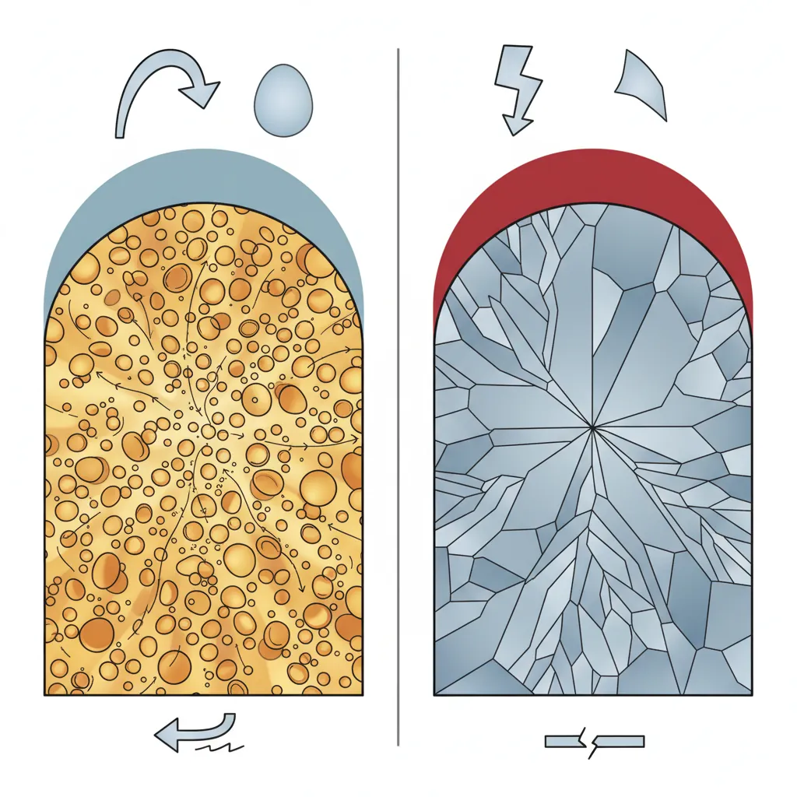
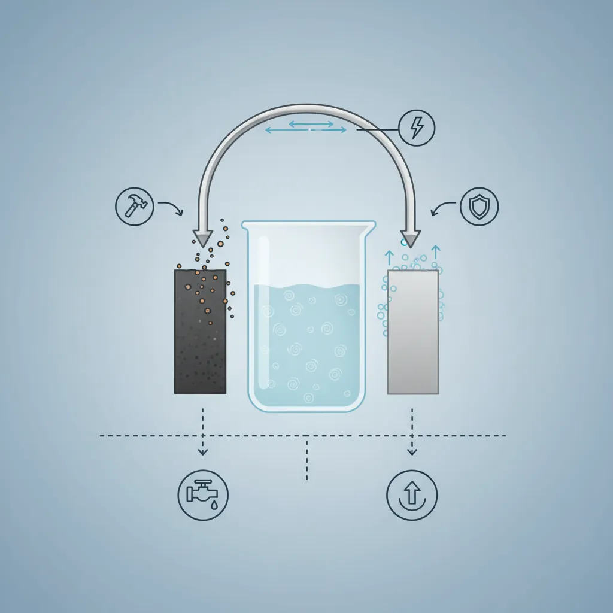
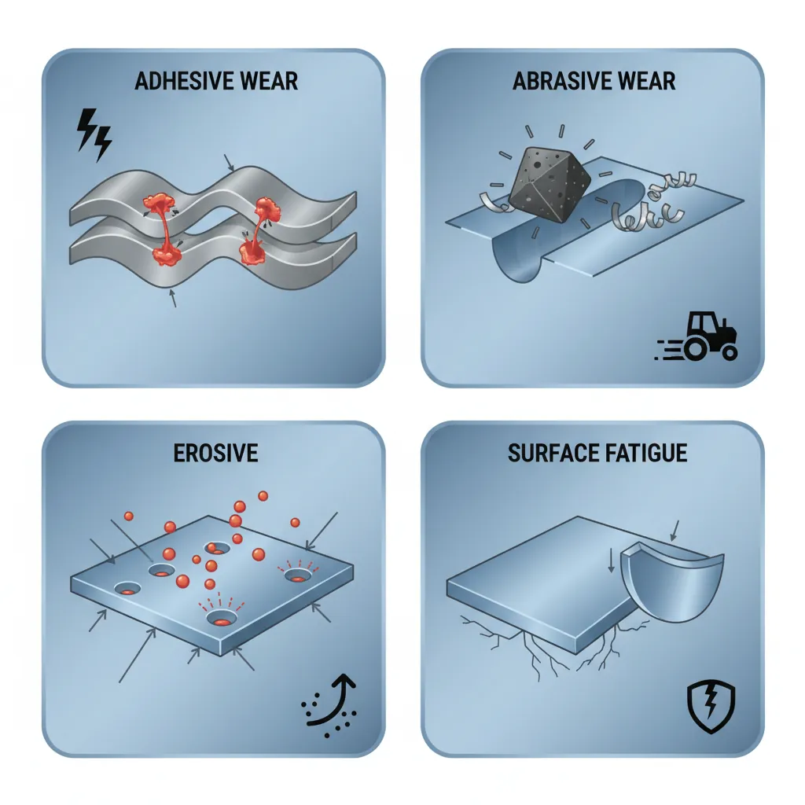
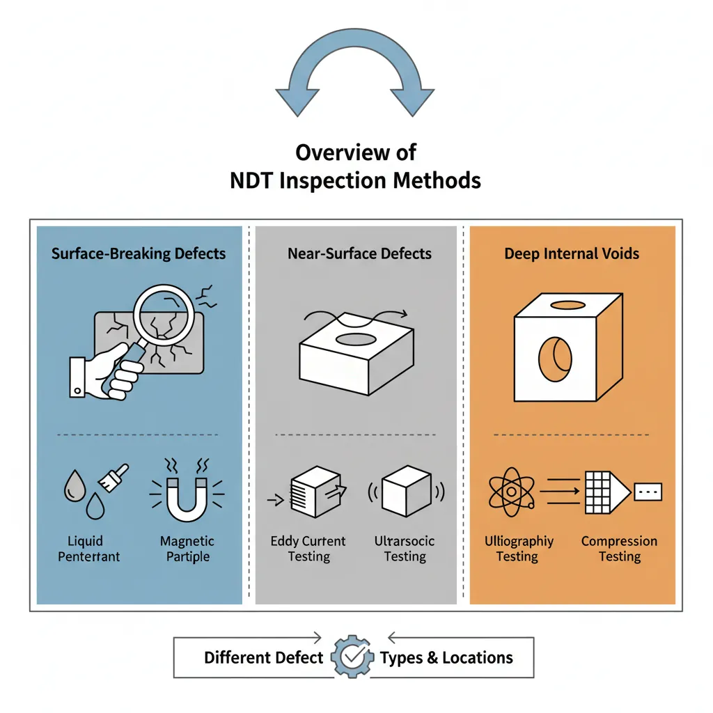
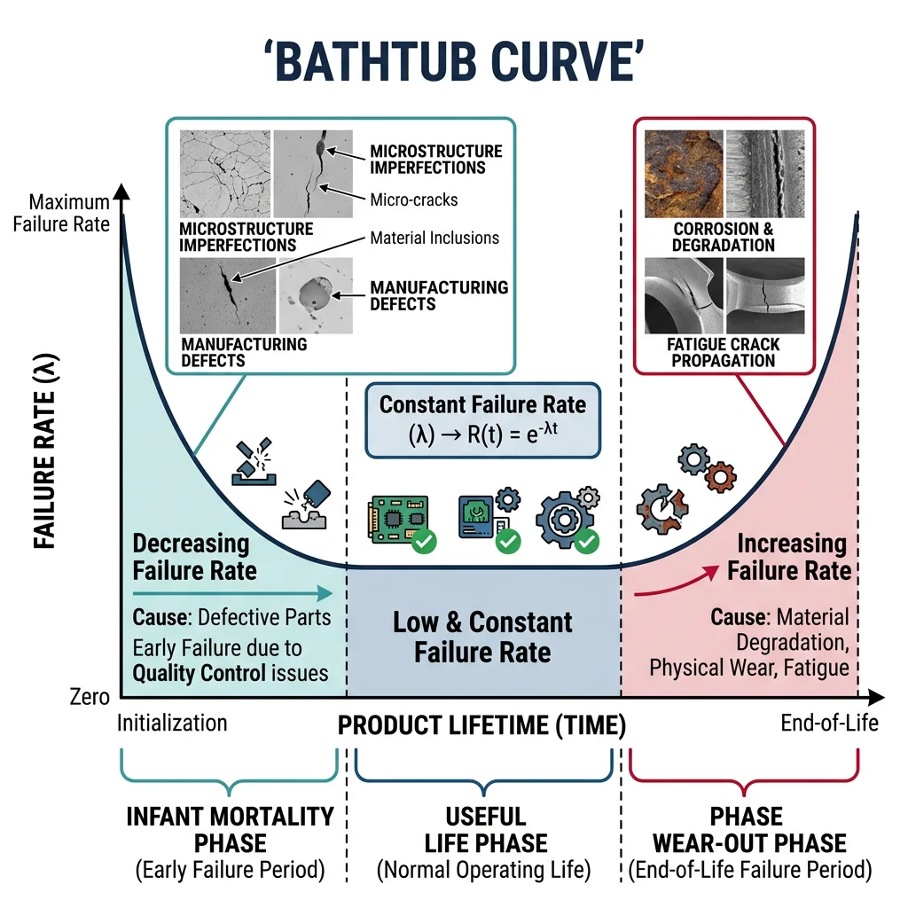

Fractography & Fracture Surfaces
Materials Science Mastery
Atomic Structure & Quantum Foundations
Quantum mechanics, bonding, band theory, Fermi energy, phononsCrystal Structures, Defects & Diffusion
FCC/BCC/HCP, Miller indices, dislocations, phase diagrams, Fick's lawsMetals & Alloys
Iron-carbon diagram, steels, aluminum, titanium, superalloys, heat treatmentPolymers & Soft Materials
Polymer chemistry, thermoplastics, viscoelasticity, rheology, biopolymersCeramics, Glass & Composites
Oxide ceramics, toughening, fiber-reinforced composites, interfacial bondingMechanical Behavior & Testing
Stress-strain, hardness, fatigue, fracture toughness, nanoindentationFailure Analysis & Reliability Engineering
Fractography, corrosion, tribology, root cause analysisNanomaterials & Smart Materials
Nanotubes, graphene, piezoelectrics, shape memory alloys, self-healingMaterials Characterization Techniques
XRD, SEM, TEM, AFM, DSC, TGA, spectroscopyThermodynamics & Kinetics of Materials
Gibbs free energy, CALPHAD, phase stability, solidificationElectronic, Magnetic & Optical Materials
Semiconductors, photovoltaics, dielectrics, superconductorsBiomaterials
Implants, biocompatibility, tissue engineering, drug deliveryEnergy Materials
Battery materials, hydrogen storage, fuel cells, nuclear materialsComputational Materials Science
DFT, molecular dynamics, FEM, materials informatics, AIFailure analysis is the forensic science of engineering — when a component breaks, cracks, corrodes, or wears out, failure analysts work like detectives, examining the "crime scene" to determine what failed, how it failed, and most importantly, why it failed. Think of it like a medical autopsy, but for machines and structures.
Analogy — The Broken Bone: When a doctor examines an X-ray of a broken bone, they can tell whether it was a sudden impact (like a fall), a stress fracture from repetitive loading (like a runner's injury), or weakening from disease (like osteoporosis). Similarly, a materials engineer examines a fracture surface under a microscope and can tell whether the failure was ductile (slow, energy-absorbing), brittle (sudden, catastrophic), or fatigue (progressive, cyclic).

- Ductile Fracture: Shows a cup-and-cone shape in tensile specimens. Under SEM, displays dimpled rupture — thousands of tiny hemispheres (microvoid coalescence). Preceded by significant plastic deformation and necking. The material "warned" you before breaking.
- Brittle Fracture: Flat, shiny fracture surface with little to no deformation. Shows cleavage facets — flat mirror-like planes where atoms separated along crystallographic planes. Also features river patterns that point back to the fracture origin. The material broke without warning.
- Mixed Mode: Many real failures show both features — ductile dimples in some regions and cleavage in others, often depending on temperature, strain rate, and local stress state.
The fracture surface tells a story. By examining it at multiple scales — naked eye (macro-fractography), optical microscope, and scanning electron microscope (micro-fractography) — engineers can trace the crack back to its origin, identify the failure mechanism, and determine whether the cause was overload, fatigue, corrosion, manufacturing defect, or design error.
Reading Fracture Surfaces: A Systematic Approach
Step 1 — Visual Examination: Look at the overall fracture shape. Is it flat (brittle) or deformed (ductile)? Are there beach marks (fatigue)? Is there discoloration (corrosion or heat)?
Step 2 — Find the Origin: Follow chevron marks, river patterns, or beach marks back to where they converge — that's where the crack started. Look for stress concentrators: sharp corners, notches, inclusions, or weld defects.
Step 3 — Identify the Mechanism: Dimples = ductile overload. Cleavage = brittle fracture. Beach marks + striations = fatigue. Intergranular cracking = environmental or creep. Branching cracks = stress corrosion.
Step 4 — Determine Root Cause: Was the load higher than designed? Was the material below specification? Was there an undetected defect? Was the environment more aggressive than expected?
import numpy as np
import matplotlib.pyplot as plt
# Visualize ductile vs brittle fracture energy absorption
materials = ['Mild Steel\n(Ductile)', 'Cast Iron\n(Brittle)', 'Al 6061-T6\n(Ductile)',
'Glass\n(Brittle)', 'Ti-6Al-4V\n(Mixed)', 'Copper\n(Very Ductile)']
# Fracture toughness K_IC (MPa√m)
fracture_toughness = [140, 20, 29, 0.7, 75, 100]
# Elongation at break (%)
elongation = [25, 0.5, 12, 0, 14, 45]
fig, (ax1, ax2) = plt.subplots(1, 2, figsize=(14, 6))
colors = ['#3B9797', '#BF092F', '#3B9797', '#BF092F', '#16476A', '#3B9797']
ax1.barh(materials, fracture_toughness, color=colors, edgecolor='white', height=0.6)
ax1.set_xlabel('Fracture Toughness K_IC (MPa√m)', fontsize=12)
ax1.set_title('Fracture Toughness Comparison', fontsize=14, fontweight='bold')
ax1.axvline(x=30, color='gray', linestyle='--', alpha=0.5, label='Ductile/Brittle threshold')
ax2.barh(materials, elongation, color=colors, edgecolor='white', height=0.6)
ax2.set_xlabel('Elongation at Break (%)', fontsize=12)
ax2.set_title('Ductility Comparison', fontsize=14, fontweight='bold')
plt.tight_layout()
plt.savefig('ductile_vs_brittle_comparison.png', dpi=150, bbox_inches='tight')
plt.show()
print("Ductile materials: high toughness + high elongation")
print("Brittle materials: low toughness + near-zero elongation")
Fatigue Fracture Surfaces
Fatigue fractures are the most common cause of mechanical failure in service — accounting for an estimated 80-90% of all structural failures. Unlike overload fractures that happen in a single event, fatigue fractures grow slowly over thousands or millions of cycles before final catastrophic failure.
Analogy — Bending a Paperclip: If you bend a paperclip back and forth, it doesn't break on the first bend. But after 20-30 cycles, a tiny crack forms and grows with each bend until the clip snaps. The crack grew under loads far below the material's ultimate strength — that's fatigue.
- Beach Marks (Macroscopic): Concentric semicircular lines radiating from the crack origin, like rings in a tree trunk. Each mark represents a period of crack arrest (e.g., machine shutdown). Visible to the naked eye.
- Striations (Microscopic): Tiny parallel lines visible only under SEM, where each striation represents one load cycle. Spacing increases as the crack grows faster. Counting striations = counting cycles.
- Ratchet Marks: Lines radiating from the surface where multiple crack initiation sites merge. More ratchet marks = higher stress or more defects.
- Final Fracture Zone: The last region to fail — shows overload features (dimples or cleavage). Its size relative to the total area tells you the load level.
A skilled analyst can reconstruct the entire loading history from a fatigue fracture surface: where the crack started, how fast it grew, how many cycles it endured, and what the final failure load was.
Environmentally Assisted Cracking
Some of the most dangerous failures occur when mechanical stress and corrosive environment work together — the combination is far more damaging than either acting alone. It's like how a small scratch on your car is harmless, but that same scratch in a salty coastal climate quickly becomes severe rust.
- Stress Corrosion Cracking (SCC): Requires sustained tensile stress + specific corrosive environment + susceptible material. Cracks branch like lightning bolts. Examples: brass in ammonia, stainless steel in chlorides, aluminum in salt water.
- Hydrogen Embrittlement (HE): Hydrogen atoms diffuse into steel and reduce ductility dramatically. Common in high-strength steels exposed to hydrogen gas, electroplating baths, or cathodic protection. Leads to sudden brittle fracture.
- Corrosion Fatigue: Fatigue + corrosive environment. Eliminates the endurance limit — even low stresses cause failure eventually. S-N curve drops continuously instead of leveling off. Seawater + cyclic loading = extremely dangerous combination.
Case Study: Silver Bridge Collapse (1967)
The Silver Bridge connecting West Virginia and Ohio collapsed during rush hour on December 15, 1967, killing 46 people. Investigation revealed that a single eyebar link in the suspension chain had developed a small stress corrosion crack (just 0.1 inches deep) that grew by corrosion fatigue over 40 years of service. When the remaining cross-section could no longer carry the load, the link fractured, the chain failed, and the entire bridge collapsed in less than a minute.
Lessons Learned: This disaster led to the creation of the National Bridge Inspection Program, requiring all U.S. bridges to be inspected every two years. It demonstrated that even redundant structures can fail catastrophically from a single uninspected critical component.
Corrosion Mechanisms & Prevention
Corrosion is the electrochemical degradation of metals — essentially, metals returning to their natural oxide state. It costs the global economy an estimated $2.5 trillion annually (about 3.4% of global GDP). Think of corrosion as the reverse of metallurgy: we spend enormous energy extracting iron from iron ore (Fe₂O₃), and corrosion simply undoes that work, turning iron back into rust (Fe₂O₃).
Analogy — The Battery: Every corrosion cell works exactly like a battery. You need four things: an anode (the metal that corrodes), a cathode (where reduction happens), an electrolyte (conducts ions — water, soil, concrete), and a metallic path (conducts electrons). Remove any one of these four elements, and corrosion stops.

graph TD
C["Corrosion
Mechanisms"]
UNI["Uniform
Corrosion"]
GAL["Galvanic
Corrosion"]
PIT["Pitting
Corrosion"]
CREV["Crevice
Corrosion"]
IG["Intergranular
Corrosion"]
SCC["Stress Corrosion
Cracking (SCC)"]
C --> UNI
C --> GAL
C --> PIT
C --> CREV
C --> IG
C --> SCC
UNI --> U1["Even material loss
across surface"]
GAL --> G1["Two dissimilar metals
in electrolyte"]
PIT --> P1["Localized holes,
chloride attack"]
CREV --> CR1["Stagnant solution
in tight gaps"]
IG --> I1["Attack along
grain boundaries"]
SCC --> S1["Tensile stress +
corrosive environment"]
style C fill:#132440,stroke:#132440,color:#fff
style SCC fill:#BF092F,stroke:#132440,color:#fff
When two different metals are connected in an electrolyte, the more "active" (less noble) metal corrodes preferentially, protecting the more "noble" metal. This is the galvanic series:
- Most Active (Anodic): Magnesium → Zinc → Aluminum → Steel → Cast Iron
- Middle: Lead → Tin → Nickel → Brass → Copper → Bronze
- Most Noble (Cathodic): Stainless Steel (passive) → Silver → Titanium → Gold → Platinum
Rule of Thumb: The greater the separation between two metals in the galvanic series, the faster the active metal corrodes. Aluminum rivets in a copper plate = disaster. Copper rivets in aluminum plate = the aluminum corrodes rapidly.
The corrosion rate of a galvanic couple depends on the area ratio. A small anode connected to a large cathode (e.g., a steel bolt in a copper plate) corrodes extremely fast because the current is concentrated on a small area. A large anode with a small cathode (e.g., galvanized steel where the zinc coating is the anode) corrodes slowly and uniformly — which is why galvanizing works so well.
import numpy as np
import matplotlib.pyplot as plt
# Galvanic Series - Standard electrode potentials (V vs SHE)
metals = ['Mg', 'Zn', 'Al', 'Fe', 'Ni', 'Sn', 'Pb', 'Cu', 'Ag', 'Pt', 'Au']
potentials = [-2.37, -0.76, -1.66, -0.44, -0.26, -0.14, -0.13, 0.34, 0.80, 1.20, 1.50]
# Color code: active metals (corrode easily) vs noble metals (corrosion resistant)
colors = ['#BF092F' if p < 0 else '#3B9797' for p in potentials]
fig, ax = plt.subplots(figsize=(12, 6))
bars = ax.barh(metals, potentials, color=colors, edgecolor='white', height=0.6)
ax.axvline(x=0, color='black', linewidth=2, linestyle='-')
ax.set_xlabel('Standard Electrode Potential (V vs SHE)', fontsize=12)
ax.set_title('Galvanic Series: Active vs Noble Metals', fontsize=14, fontweight='bold')
# Add annotations
ax.text(-2.0, 10.5, '← More Active (Corrodes)', fontsize=11, color='#BF092F', fontweight='bold')
ax.text(0.5, 10.5, 'More Noble (Protected) →', fontsize=11, color='#3B9797', fontweight='bold')
plt.tight_layout()
plt.savefig('galvanic_series.png', dpi=150, bbox_inches='tight')
plt.show()
# Calculate galvanic potential difference
print("\nGalvanic Couple Examples:")
print(f" Al-Cu couple: ΔV = {0.34 - (-1.66):.2f} V → SEVERE corrosion of Al")
print(f" Zn-Fe couple: ΔV = {-0.44 - (-0.76):.2f} V → Zn corrodes (sacrificial protection)")
print(f" Cu-Ag couple: ΔV = {0.80 - 0.34:.2f} V → Mild corrosion of Cu")
Pitting, Crevice & Stress Corrosion Cracking
While uniform corrosion is predictable and manageable (just add extra thickness — a "corrosion allowance"), localized corrosion is far more dangerous because it's concentrated and often invisible until failure occurs.
- Pitting Corrosion: Small, deep holes that penetrate the metal while the surrounding surface appears intact. Caused by local breakdown of passive films (especially by chloride ions on stainless steel). Pits act as stress concentrators and can initiate fatigue cracks. The pitting resistance equivalent number (PREN) predicts resistance: PREN = %Cr + 3.3(%Mo) + 16(%N). Higher PREN = better resistance.
- Crevice Corrosion: Occurs in tight gaps (under gaskets, between bolt heads, in lap joints) where stagnant solution becomes depleted of oxygen. The crevice becomes acidic and aggressive. Prevention: Design with open geometries, use sealants, avoid standing water.
- Intergranular Corrosion: Preferential attack along grain boundaries where chromium carbides precipitate (in stainless steels heated to 450-850°C). Called sensitization. Prevented by using low-carbon grades (304L, 316L) or stabilized grades (321, 347).
Corrosion Protection Strategies
Just as you protect your car with paint, wax, and undercoating, engineers use multiple layers of defense against corrosion. The key principle: break the corrosion cell by eliminating one of its four components.
| Strategy | Mechanism | Examples | Best For |
|---|---|---|---|
| Material Selection | Use inherently corrosion-resistant alloys | Stainless steel, titanium, Inconel, Hastelloy | Chemical plants, medical implants |
| Barrier Coatings | Isolate metal from environment | Paint, epoxy, powder coating, enamel | Structural steel, pipelines |
| Sacrificial Protection | More active metal corrodes instead | Galvanizing (zinc), zinc anodes on ship hulls | Marine, underground structures |
| Cathodic Protection | Apply external current to make structure cathodic | Impressed current on pipelines, reinforced concrete | Underground pipelines, offshore platforms |
| Inhibitors | Chemical additives in corrosive solution | Chromates, nitrites, phosphates, organic inhibitors | Cooling water systems, antifreeze |
| Design Improvements | Eliminate features that promote corrosion | Drain holes, avoid crevices, insulate dissimilar metals | All applications (first line of defense) |
Case Study: USS Independence (LCS-2) Corrosion
The U.S. Navy's Littoral Combat Ships built with aluminum hulls experienced severe galvanic corrosion where aluminum met steel fittings in seawater. The aluminum (active) corroded rapidly in contact with steel (noble) in the highly conductive seawater electrolyte. Repair costs exceeded $20 million per ship.
Solution: Installing isolating gaskets between dissimilar metals, applying barrier coatings at joints, and adding sacrificial zinc anodes. The lesson: never connect aluminum directly to steel in a marine environment without electrical isolation.
Wear & Tribology
Tribology is the science of interacting surfaces in relative motion — encompassing friction, wear, and lubrication. The word comes from the Greek tribos (rubbing). Wear removes material from surfaces and is responsible for enormous economic losses: an estimated $600 billion annually in the U.S. alone through equipment replacement, downtime, and energy waste from friction.
Analogy — Sandpaper on Wood: When you sand wood, both the sandpaper and the wood lose material. Hard abrasive particles cut into the softer surface (abrasive wear). But even smooth surfaces touching each other — like your hands rubbing together — generate friction and heat because of microscopic contact points (adhesive wear). All surfaces are rough at the atomic scale.

- Adhesive Wear: Microscopic "cold welds" form at contact points, then tear apart. Transfer of material from one surface to another. Example: Galling in stainless steel bolts tightened without lubrication.
- Abrasive Wear: Hard particles or asperities plow grooves in a softer surface. Two-body: sandpaper on metal. Three-body: sand particles between piston and cylinder wall. Hardness ratio is key — if $H_{abrasive}/H_{surface}$ > 1.2, severe abrasion occurs.
- Erosive Wear: Material removal by impact of particles, liquid droplets, or gas. Direction of impact matters: ductile materials erode most at 20-30° impact angle, brittle materials at 90°. Example: Wind turbine blade erosion from rain and sand.
- Fatigue (Surface) Wear: Repeated contact loading causes subsurface cracks that grow and spall off flakes. Example: Pitting on gear teeth, ball bearing race spalling after millions of cycles.
The Archard wear equation quantifies adhesive/abrasive wear volume:
$$V = K \frac{F \cdot s}{H}$$
Where $V$ is wear volume (mm³), $K$ is the dimensionless wear coefficient (varies from 10⁻² for severe wear to 10⁻⁸ for lubricated contact), $F$ is normal load (N), $s$ is sliding distance (m), and $H$ is hardness of the softer surface (Pa).
Lubrication & Surface Engineering
Lubrication separates contacting surfaces with a low-shear-strength film — reducing friction, wear, and heat generation. Three lubrication regimes are defined by the Stribeck curve:
- Boundary Lubrication: Surfaces in direct contact with only a thin molecular layer of lubricant. Friction coefficient μ ≈ 0.1-0.3. Common at startup, low speeds, high loads. Surface chemistry dominates.
- Mixed Lubrication: Partial separation by fluid film. Some asperity contact. μ ≈ 0.01-0.1. Typical operating condition for many bearings and gears.
- Hydrodynamic Lubrication: Full separation by thick fluid film. No contact between surfaces. μ ≈ 0.001-0.01. Achieved at sufficient speed and moderate loads. Journal bearings in engines operate here.
Surface engineering modifies surface properties without changing the bulk material — giving you the best of both worlds: a tough, shock-resistant core with a hard, wear-resistant surface. Key techniques include:
- Case Hardening (Carburizing): Diffuse carbon into the surface of low-carbon steel at 900-950°C. Creates a hard surface (60+ HRC) with a tough core. Used for gears and shafts.
- Nitriding: Diffuse nitrogen at 500-550°C. No quenching needed — less distortion than carburizing. Excellent for precision parts.
- PVD/CVD Coatings: Deposit thin films (TiN, TiAlN, DLC) by physical or chemical vapor deposition. Diamond-Like Carbon (DLC) coatings achieve friction coefficients as low as 0.05.
- Thermal Spray: Melt and spray ceramic or metal powders onto surfaces. Plasma spray, HVOF. Creates thick, wear-resistant coatings for severe environments.
Non-Destructive Testing (NDT)
Non-destructive testing detects defects without damaging the component — essential for in-service inspection, quality control, and safety certification. Think of NDT as the medical imaging of engineering: just as MRI, X-ray, and ultrasound examine your body without surgery, NDT methods examine structures without cutting them apart.

| NDT Method | Principle | Detects | Limitations |
|---|---|---|---|
| Visual (VT) | Direct visual or camera inspection | Surface defects, corrosion, deformation | Surface only; subjective |
| Dye Penetrant (PT) | Liquid penetrates open surface cracks, made visible by developer | Surface-breaking cracks, porosity | Surface cracks only; messy cleanup |
| Magnetic Particle (MT) | Magnetic field distortion at defects attracts iron particles | Surface and near-surface cracks | Ferromagnetic materials only |
| Ultrasonic (UT) | Sound waves reflect from internal defects | Internal cracks, voids, thickness | Requires coupling; skill-dependent |
| Radiographic (RT) | X-rays or gamma rays reveal internal structure | Internal porosity, inclusions, cracks | Radiation safety; expensive |
| Eddy Current (ET) | Induced currents disrupted by defects | Surface cracks in conductors | Conductive materials only; shallow penetration |
| Acoustic Emission (AE) | Detect stress waves from growing defects | Active crack growth, leaks | Cannot detect dormant defects |
import numpy as np
import matplotlib.pyplot as plt
# NDT method selection guide based on defect type and material
methods = ['Visual', 'Dye Penetrant', 'Magnetic\nParticle', 'Ultrasonic',
'Radiographic', 'Eddy Current', 'Acoustic\nEmission']
# Capability scores (0-10) for different defect types
surface_cracks = [6, 9, 8, 5, 3, 8, 2]
internal_voids = [0, 0, 0, 9, 8, 1, 6]
corrosion = [7, 3, 2, 8, 6, 5, 4]
fatigue_cracks = [3, 7, 7, 9, 5, 8, 8]
x = np.arange(len(methods))
width = 0.2
fig, ax = plt.subplots(figsize=(14, 7))
ax.bar(x - 1.5*width, surface_cracks, width, label='Surface Cracks', color='#3B9797')
ax.bar(x - 0.5*width, internal_voids, width, label='Internal Voids', color='#132440')
ax.bar(x + 0.5*width, corrosion, width, label='Corrosion', color='#BF092F')
ax.bar(x + 1.5*width, fatigue_cracks, width, label='Fatigue Cracks', color='#16476A')
ax.set_ylabel('Detection Capability (0-10)', fontsize=12)
ax.set_title('NDT Method Selection Guide', fontsize=14, fontweight='bold')
ax.set_xticks(x)
ax.set_xticklabels(methods, fontsize=10)
ax.legend(loc='upper right')
ax.set_ylim(0, 11)
ax.grid(axis='y', alpha=0.3)
plt.tight_layout()
plt.savefig('ndt_selection.png', dpi=150, bbox_inches='tight')
plt.show()
print("Best for surface cracks: Dye Penetrant, Magnetic Particle, Eddy Current")
print("Best for internal voids: Ultrasonic, Radiographic")
print("Best for active damage monitoring: Acoustic Emission")
Reliability Engineering
Reliability engineering answers the question: "How long will this component last, and with what probability?" Rather than asking "will it fail?" (everything eventually fails), reliability engineers ask "when will it fail?" and "how can we predict and prevent it?"
Analogy — The Bathtub Curve: If you plot the failure rate of a population of components over their lifetime, you get the famous bathtub curve. Early in life, weak components fail quickly (infant mortality). Then failure rate drops to a constant low level during useful life (random failures). Finally, failure rate increases as components age and wear out (wear-out phase). This curve looks exactly like a bathtub when viewed from the side.

RCA systematically traces a failure back from its symptoms to its fundamental cause. The Five Whys technique asks "why?" repeatedly until the root cause is reached:
- Why did the pump fail? → The shaft broke.
- Why did the shaft break? → Fatigue crack initiation at a keyway.
- Why did a crack initiate there? → The keyway had a sharp corner (stress concentration).
- Why was the corner sharp? → The machinist didn't add the specified fillet radius.
- Why wasn't this caught? → Quality control didn't inspect keyway geometry.
Root cause: Inadequate quality control inspection procedure. Corrective action: Update inspection checklist to include keyway radius measurement.
Weibull & Statistical Failure Models
The Weibull distribution is the most widely used statistical model for failure analysis because it can model all three phases of the bathtub curve with just two parameters. The reliability function (probability of surviving to time $t$) is:
$$R(t) = e^{-(t/\eta)^\beta}$$
Where $\eta$ is the characteristic life (scale parameter — time at which 63.2% of components have failed) and $\beta$ is the shape parameter (determines failure pattern):
- $\beta$ < 1: Failure rate decreasing — infant mortality (manufacturing defects, burn-in failures)
- $\beta$ = 1: Failure rate constant — random failures (exponential distribution, useful life)
- $\beta$ > 1: Failure rate increasing — wear-out (fatigue, corrosion, aging)
- $\beta$ ≈ 3.5: Approximates a normal distribution (symmetric wear-out)
import numpy as np
import matplotlib.pyplot as plt
# Weibull distribution analysis for component reliability
t = np.linspace(0.01, 5, 500) # Time (normalized to characteristic life)
# Different shape parameters (beta values)
betas = [0.5, 1.0, 2.0, 3.5]
labels = ['β=0.5 (Infant mortality)', 'β=1.0 (Random)',
'β=2.0 (Early wear-out)', 'β=3.5 (Wear-out)']
colors = ['#BF092F', '#132440', '#16476A', '#3B9797']
fig, axes = plt.subplots(1, 3, figsize=(18, 5))
# Plot 1: Reliability function R(t)
for beta, label, color in zip(betas, labels, colors):
R = np.exp(-(t)**beta)
axes[0].plot(t, R, color=color, linewidth=2, label=label)
axes[0].set_xlabel('Time / η', fontsize=11)
axes[0].set_ylabel('Reliability R(t)', fontsize=11)
axes[0].set_title('Weibull Reliability Function', fontsize=13, fontweight='bold')
axes[0].legend(fontsize=9)
axes[0].grid(alpha=0.3)
# Plot 2: Failure rate (hazard function)
for beta, label, color in zip(betas, labels, colors):
# h(t) = (beta/eta) * (t/eta)^(beta-1)
h = beta * t**(beta - 1)
h = np.clip(h, 0, 5) # Clip for visualization
axes[1].plot(t, h, color=color, linewidth=2, label=label)
axes[1].set_xlabel('Time / η', fontsize=11)
axes[1].set_ylabel('Failure Rate h(t)', fontsize=11)
axes[1].set_title('Weibull Hazard Function', fontsize=13, fontweight='bold')
axes[1].legend(fontsize=9)
axes[1].set_ylim(0, 5)
axes[1].grid(alpha=0.3)
# Plot 3: Bathtub curve (composite)
t2 = np.linspace(0.01, 10, 500)
infant = 2.0 * np.exp(-2.0 * t2) # Decreasing rate
random_rate = np.ones_like(t2) * 0.15 # Constant
wearout = 0.01 * (t2 - 4)**2 * (t2 > 4) # Increasing after t=4
bathtub = infant + random_rate + wearout
axes[2].fill_between(t2[t2 < 2], bathtub[t2 < 2], alpha=0.3, color='#BF092F', label='Infant Mortality')
axes[2].fill_between(t2[(t2 >= 2) & (t2 <= 6)], bathtub[(t2 >= 2) & (t2 <= 6)], alpha=0.3, color='#3B9797', label='Useful Life')
axes[2].fill_between(t2[t2 > 6], bathtub[t2 > 6], alpha=0.3, color='#132440', label='Wear-Out')
axes[2].plot(t2, bathtub, 'k-', linewidth=2)
axes[2].set_xlabel('Time', fontsize=11)
axes[2].set_ylabel('Failure Rate', fontsize=11)
axes[2].set_title('The Bathtub Curve', fontsize=13, fontweight='bold')
axes[2].legend(fontsize=9)
axes[2].grid(alpha=0.3)
plt.tight_layout()
plt.savefig('weibull_reliability.png', dpi=150, bbox_inches='tight')
plt.show()
# Example: Calculate reliability at 10,000 hours for beta=2, eta=15,000 hours
beta_ex = 2.0
eta_ex = 15000 # hours
t_design = 10000 # hours
R_design = np.exp(-(t_design/eta_ex)**beta_ex)
print(f"\nReliability at {t_design:,} hours (β={beta_ex}, η={eta_ex:,}):")
print(f" R(t) = {R_design:.4f} = {R_design*100:.2f}%")
print(f" Probability of failure = {(1-R_design)*100:.2f}%")
Case Studies & Lessons Learned
Case Study: Eschede Train Disaster (1998)
Germany's worst rail disaster occurred when a high-speed ICE train derailed at 200 km/h near Eschede, killing 101 people. The root cause: a fatigue crack in a wheel tire. The original monobloc (solid) wheels had been replaced with "resilient" wheels — a rubber-dampened design with a thin steel tire shrink-fitted onto the wheel. The 6mm-thick tire developed a fatigue crack that grew until the tire separated, punched through the floor, and triggered derailment.
Contributing Factors: (1) The tire was allowed to wear to minimum thickness (27mm) without adequate fatigue life assessment. (2) Ultrasonic inspection had failed to detect the crack. (3) The resilient wheel design concentrated bending stresses in the thin tire. (4) Maintenance intervals were too long for this critical component.
Lessons: All resilient wheels were removed from service. New inspection protocols required all critical rail components to be designed with damage tolerance principles — assuming cracks exist and ensuring they can be detected before reaching critical size.
Case Study: Bhopal Gas Tragedy (1984)
The world's worst industrial disaster occurred at the Union Carbide pesticide plant in Bhopal, India, when 40 tonnes of methyl isocyanate (MIC) gas leaked, killing 3,800+ immediately and affecting 500,000+ people. While primarily a management and safety systems failure, materials degradation played a key role.
Materials Factors: (1) Stainless steel piping had been replaced with carbon steel (cost-cutting) — which corrodes in MIC. (2) The refrigeration unit for MIC storage was shut down. (3) The gas scrubber was undersized and non-functional. (4) Corroded valves and pipes allowed water ingress into the MIC tank. (5) The exothermic reaction with water generated massive pressure that relief valves couldn't handle.
Lessons: Material selection must never be compromised for cost in safety-critical applications. Defense-in-depth requires all safety layers (materials, instrumentation, procedures) to be maintained simultaneously. No single barrier should be relied upon.
Case Study: Sikorsky S-76 Rotor Spindle Cracking
Several Sikorsky S-76 helicopter main rotor spindles developed cracks during service and required emergency replacement. Investigation revealed hydrogen embrittlement of the high-strength steel (4340 steel, heat-treated to 280 ksi UTS) from cadmium electroplating. During the plating process, hydrogen atoms were absorbed into the steel lattice.
Root Cause: Inadequate baking after plating. The specification required 23 hours at 375°F to drive out absorbed hydrogen, but manufacturing records showed shorter bake times on affected parts.
Corrective Action: Mandatory post-plating bake verification with certified time-temperature records. Switch to ion-vapor-deposited (IVD) aluminum coating — eliminates hydrogen exposure entirely. Demonstrates why process control is as important as material selection.
Exercises & Practice Problems
- Fracture Surface Analysis: A steel shaft fractured in service. The fracture surface shows beach marks converging to a sharp corner at the keyway, a smooth fatigue zone covering 80% of the cross-section, and a rough overload zone covering 20%. (a) What was the failure mechanism? (b) Was the applied stress high or low relative to the design? (c) Where did the crack originate and why?
- Galvanic Corrosion: An aluminum boat hull has stainless steel fasteners. (a) Which metal will corrode preferentially? (b) If the fastener area is 1% of the hull area, is this dangerous? Why? (c) Propose three solutions.
- Weibull Analysis: A batch of bearings has Weibull parameters β = 2.5 and η = 50,000 hours. (a) Calculate the reliability at 30,000 hours. (b) What is the B10 life (time at which 10% have failed)? (c) Is this infant mortality, random, or wear-out failure pattern?
- NDT Selection: You need to inspect welded steel pressure vessels for internal cracks. Which NDT methods would you use and in what sequence? Justify your choices considering cost, sensitivity, and accessibility.
- Corrosion Prevention: A carbon steel storage tank holds seawater at 25°C. Design a corrosion protection system, specifying material upgrades, coatings, cathodic protection, and monitoring strategy. Estimate the required corrosion allowance if unprotected.
- Wear Rate: Using Archard's equation, calculate the wear volume for a steel pin (hardness 250 HV) sliding against a steel disk under 50 N load for 1000 m. Use K = 5 × 10⁻⁴. What would the wear volume be with a DLC-coated pin (K = 1 × 10⁻⁷)?
Conclusion & Next Steps
Failure analysis is where materials science meets detective work — every fracture surface, every corroded component, every worn bearing tells a story. In this guide, we've explored the complete toolkit of failure investigation:
- Fractography teaches us to read fracture surfaces like a book — distinguishing ductile dimples from brittle cleavage, reading beach marks to count fatigue cycles, and identifying environmentally assisted cracking.
- Corrosion science reveals the electrochemical battle between metals and their environment, and the multi-layered defense strategies we deploy to slow the inevitable return to oxide.
- Tribology quantifies the wear of interacting surfaces and provides lubrication and surface engineering solutions to extend component life by orders of magnitude.
- Reliability engineering brings statistical rigor to failure prediction through Weibull analysis, enabling us to design for specific lifetimes and inspection intervals.
- Root cause analysis transforms individual failures into systemic improvements, ensuring that each disaster teaches us something that prevents the next one.
The most important lesson from every failure investigation is this: failures rarely have a single cause. They result from a chain of events — design choices, material selection, manufacturing quality, maintenance practices, and operating conditions — where breaking any one link would have prevented the failure. Understanding this interconnectedness is what makes materials failure analysis both challenging and endlessly fascinating.